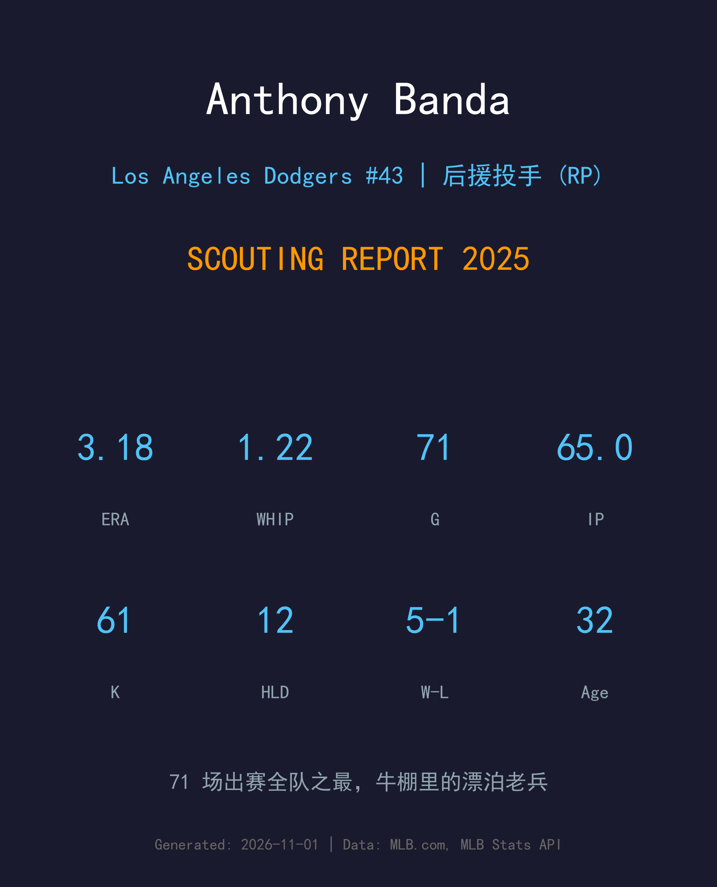
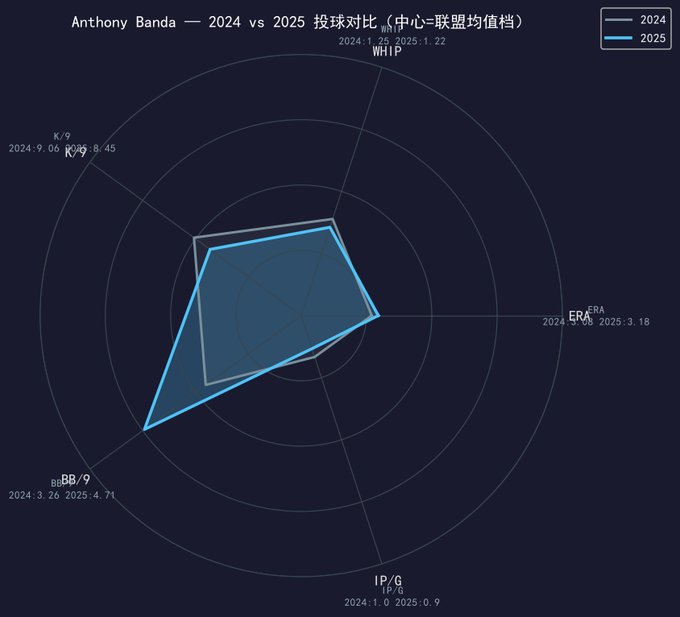
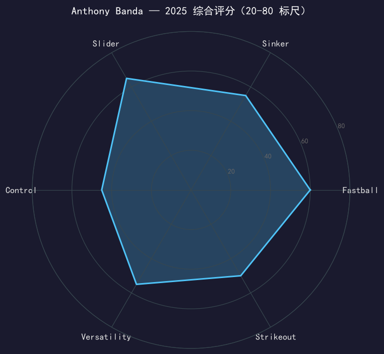

Los Angeles Dodgers #43 | 后援投手 | 左投 | 71 场出赛全队之最，牛棚里的漂泊老兵

Anthony Banda 是 2025 年道奇牛棚的「出勤王」：71 场出赛全队最高，比任何人都更频繁地听到牛棚电话响起。这位 32 岁的左投用了九年时间、辗转多支球队，终于在洛杉矶找到了最适合自己的角色——左打者专项与中段布局的双重任务。
2025 年：71 场出赛（1 场先发）、5 胜 1 负、12 次中继成功、3.18 自责分率、1.22 WHIP。与 2024 年的 3.08 几乎持平——连续两年 ERA 压在 3.2 以下，对一名流浪多年才安定下来的老将来说，这是「稳定」二字最好的注脚。
需要直视的短板是保送：BB/9 从 3.26 跳升到 4.71，34 次保送创生涯单季新高，K/BB 比跌到 1.79。教练组愿意容忍这些坏球，是因为他的滑球对左打者的压制力仍然锋利——但这也是他明年必须交代的功课。
7 月 22 日登上大联盟，自此开始了一段长达九年的漂泊生涯——先后效力多支球队，在救援、布局、专项之间不断变换角色。
加盟道奇首个赛季交出 48 场 3.08 自责分率，随队打进季后赛——多年流浪后，他第一次在休赛期不用担心自己的下一站。
71 场出赛全队最高、生涯单季新高，5 胜 1 负、12 次中继成功，连续两年 ERA 3.2 以下——32 岁的他打出了生涯最有存在感的一个赛季。
从外卡轮到世界大赛全程随队，14 次登板为全队最多——尽管内容起伏，但教练组在最关键的舞台依然每一次都想到他。

| 赛季 | G | GS | W-L | ERA | WHIP | IP | SO | BB | K/9 | BB/9 |
|---|---|---|---|---|---|---|---|---|---|---|
| 2024（道奇首季） | 48 | 2 | 3-2 | 3.08 | 1.25 | 49.2 | 50 | 18 | 9.06 | 3.26 |
| 2025（出赛王） | 71 | 1 | 5-1 | 3.18 | 1.22 | 65.0 | 61 | 34 | 8.45 | 4.71 |
两年的 ERA/WHIP 几乎重叠（3.08/3.18，1.25/1.22），说明 2025 的出赛数暴涨并没有压垮他的表现——这是纯熟的牛棚老将才有的稳定性。真正的变化在两极：被安打率下降（WHIP 改善）但保送数几乎翻倍（18→34）。换言之，他的球路质量没有退化，退化的是好球带的掌控——71 场高密度登板很可能是原因之一，也可能是教练组为求对决左打者而刻意让他「搏外角」的结果。
2025 赛季真实配球数据（MLB Stats API pitchArsenal）：
接近一半的配球比重，全联盟都少见的滑球型左投。横扫位移对付左打者是吃饭的招牌，也是他能连两年压在 3.2 ERA 以下的核心武器。
95+ mph 的伸卡配滑球构成经典的「内夹外扫」组合，诱导双杀与软弱滚地，面对右打者时的解局球路。
与伸卡 interchangeable 的四缝线，好球带上缘抢好球数，为三颗变化球打开局面。
零星配出的第四球种，主要用来打乱打者的击球定时，占比极小说明它仍是「展示品」而非武器。
71 场出赛意味着什么？道奇 2025 常规赛场次约 162 场，Banda 平均每 2.3 场就要登板一次，而且绝大多数是「有局分压力」的真枪实弹。教练组敢于如此使用一名 32 岁老将，看中的正是他的恢复速度与对左打者的稳定压制——这是他九年漂泊练就的核心竞争力。
BB/9 从 3.26 涨到 4.71，K/BB 从 2.78 跌到 1.79，这不是可以忽略的小波动。34 次保送中有多少是「战术性外角搏杀」、多少是控制力真实下滑，将直接决定他下一份合同的价值。从 splits 逻辑看，他在对决左打者时敢于连续搏外角滑球，这会天然推高保送数——但 4.71 仍超出了舒适区。
14 次登板全队最多，却只在 5.2 局中丢掉 6 分（ERA 9.53），被敲 2 支全垒打。季后赛的对手针对性强、打者质量高，纯靠滑球单点突破的专项投手最容易被研究透。好消息是教练组依然场场派他；坏消息是他的季后赛内容确实没能复刻常规赛的压制力。

稳定的左援老将，牛棚出勤王
B- 级 / 牛棚老将
道奇 2025 季后赛夺冠之路：外卡 2-0 红人 → NLDS 3-1 费城人 → NLCS 4-0 酿酒人 → 世界大赛 4-3 多伦多蓝鸟。
Banda 全程随队，14 次登板为全队最多，但内容起伏：5.2 局失 6 分（ERA 9.53），被敲 7 支安打含 2 支全垒打，仅有 3 次三振。
Anthony Banda 的休赛期走向是道奇牛棚拼图上的待定变量。32 岁的年龄与连续两年 3.2 以下的 ERA 放在一起，他既可能是「低价续留的左援答案」，也可能是「争冠球队眼馋的经验型目标」。对他自己而言，控制保送数是把下一份合同金额与年限谈上去的唯一筹码。
理想剧本：续约留队，把 BB/9 压回 3.5 以下，继续出任左投专项
现实基准：无论在哪队，都是 60-70 场级别的出赛型牛棚左投
上行惊喜：若变速球进化成第三武器，有望摆脱「左打者专项」标签
Anthony Banda 来自德克萨斯州科珀斯克里斯蒂，2017 年 7 月 22 日登上大联盟。他的前七年是一幅标准的「漂流地图」——从美联到国联，从重建队到争冠队，行李打包了一次又一次。牛棚投手的命运往往如此：今天的队友明年就变成对手，唯一不变的只有那颗越磨越滑的滑球。
2024 年，他在洛杉矶停下了脚步。道奇给他的不只是合同，还有清晰的角色定义——对左打者时上场，用滑球结束回合。简单，直接，而他把这份简单做到了极致：连续两年 ERA 3.2 以下，2025 年更是以 71 场出赛戴上全队出勤王的桂冠。
九年漂泊教会他的最重要一课是：牛棚里没有小角色，只有还没轮到你的回合。2025 年世界大赛的香槟雨里，这位 32 岁的老兵终于可以说——这一站，值了。